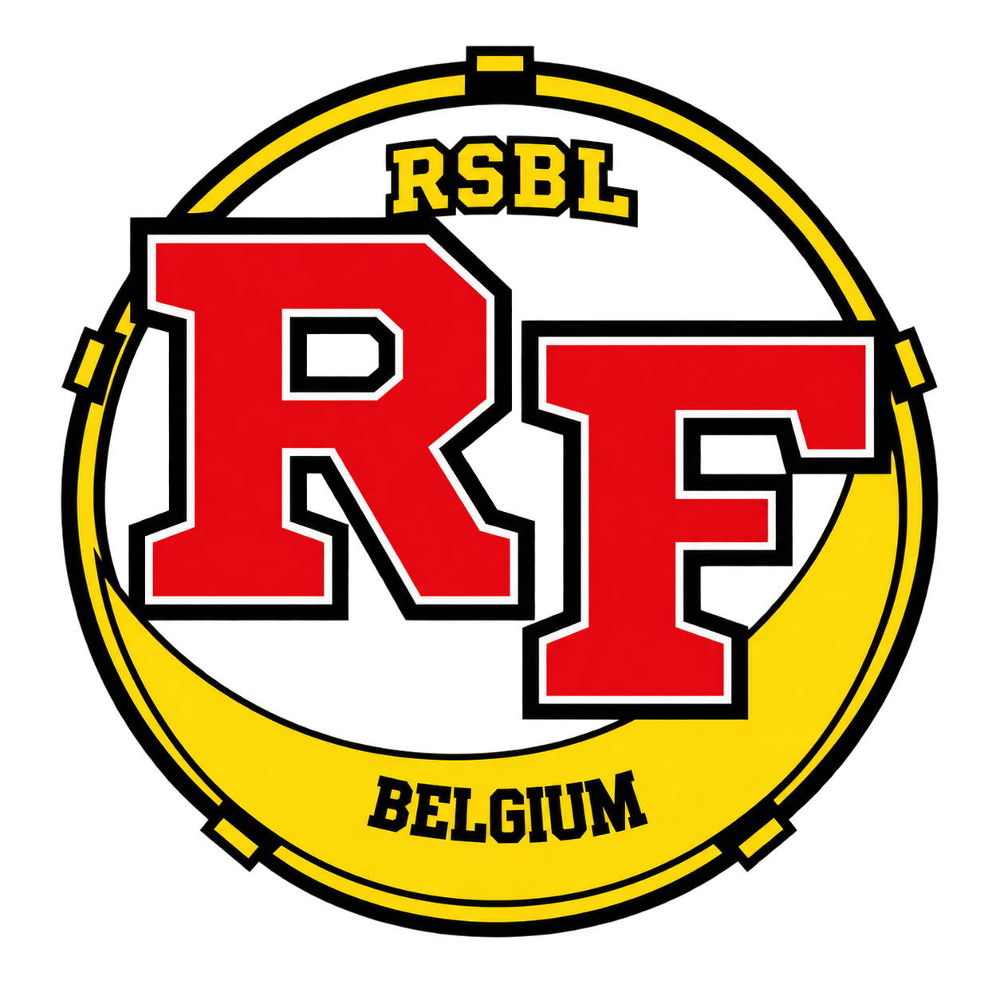

Stel je team samen en kies de league die bij jullie past. Teams bestaan uit twee spelers.
De definitieve deelnameprijzen worden later bekendgemaakt.
Inschrijvingen starten binnenkort
Inclusief goodiebag voor iedere deelnemer. Gratis toegang voor supporters.